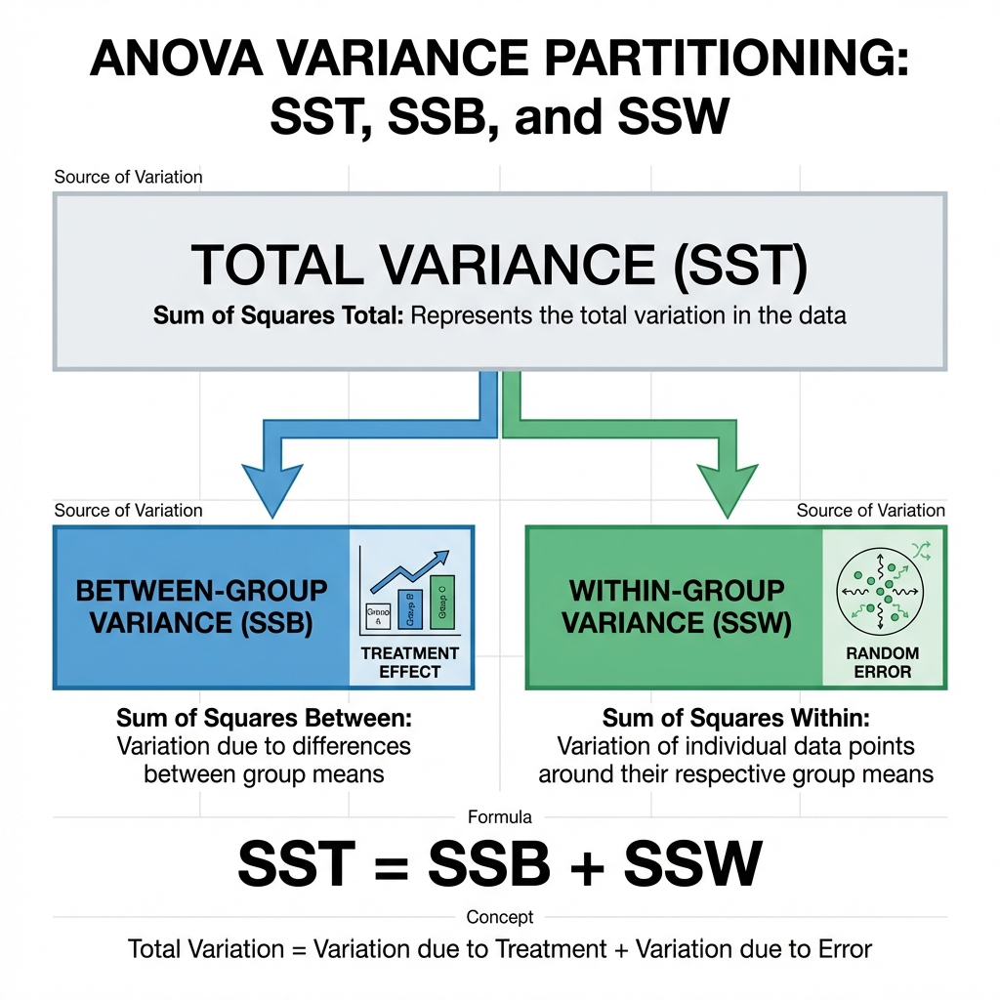
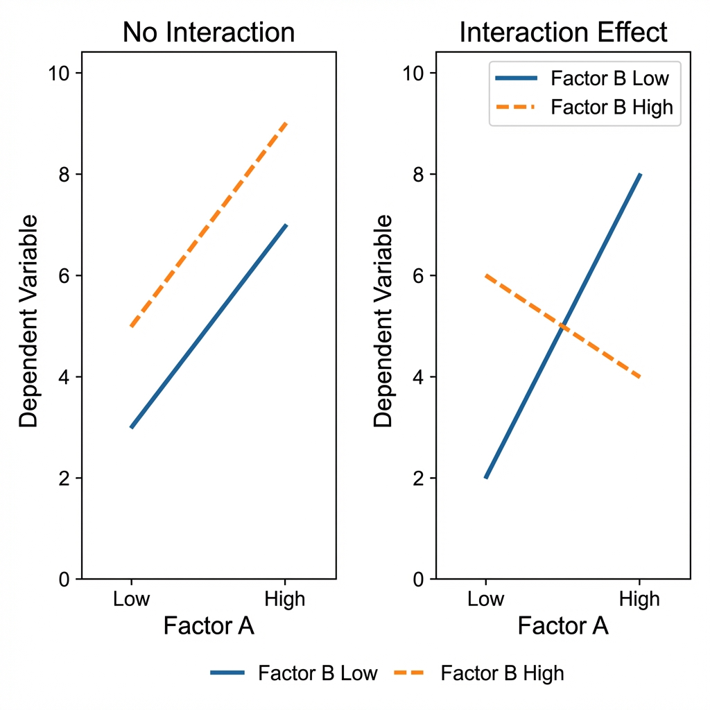
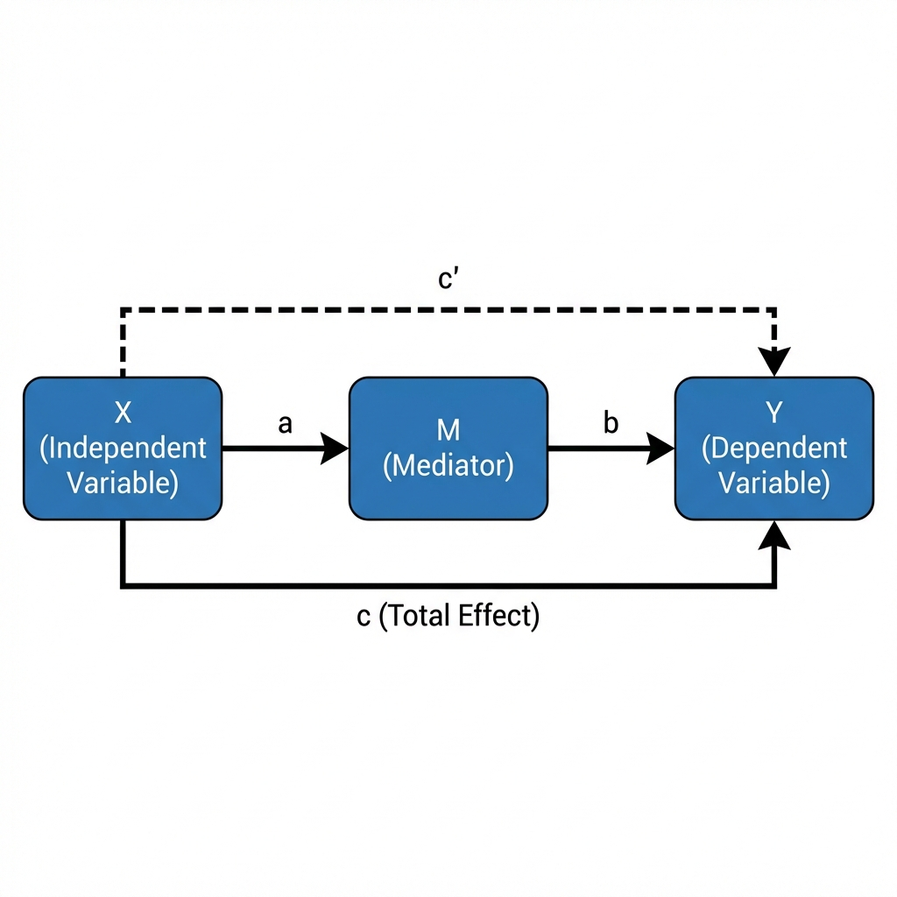
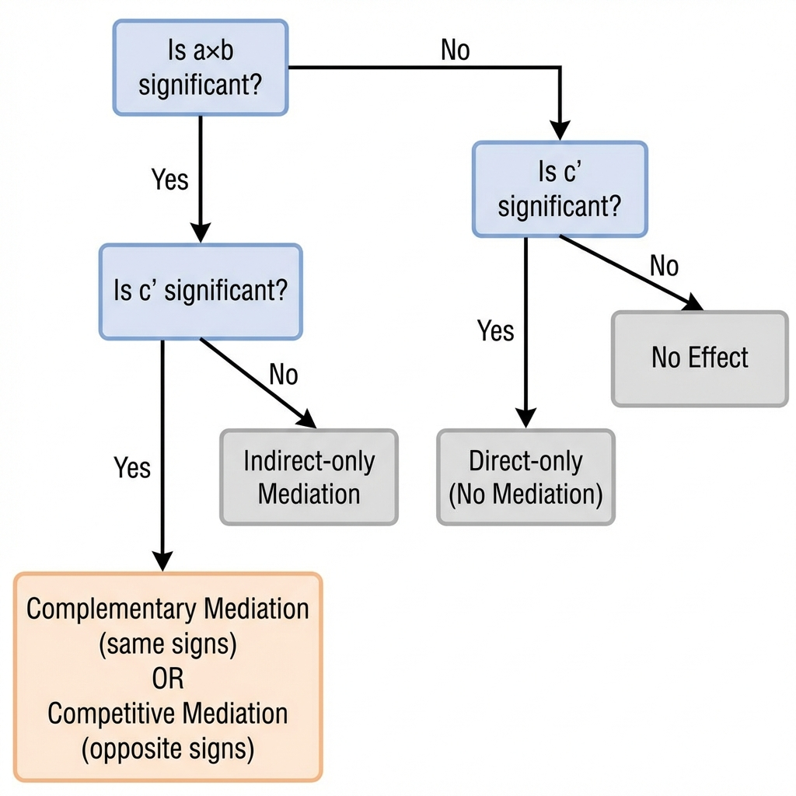

Week 1: Introduction & ANOVA
BUSI 6480 Week 1 - Comprehensive Study Guide
Advanced Experimental Design & Statistical Analysis
📌 Course Overview
Course: BUSI 6480 - Experimental Design
Instructor Focus: Learning syntax-based statistical analysis is essential
Week 1 Topics:
- Kirk Chapters 1, 2, and 3
- Introduction to Experimental Design
- ANOVA (Analysis of Variance)
- Mediation Analysis
- Statistical Software (SAS, R, Python comparison)
- Tests for Homogeneity of Variance
🎯 Week 1 Learning Objectives
By the end of Week 1, you should be able to:
- Understand basic experimental design terminology and concepts
- Perform ANOVA analysis and interpret results
- Test for homogeneity of variance using multiple methods
- Understand mediation analysis concepts and Baron & Kenny's approach
- Run statistical analyses using SAS, R, and understand their syntax
- Apply contrasts and multiple comparison procedures
📖 Part 1: Experimental Design Fundamentals (Kirk Chapters 1-3)
1.1 Basic Terminology
Experimental Unit (Subject)
- The entity to which a treatment is applied
- Example: In a reading study, each student is an experimental unit
Treatment
- A specific condition or factor level combination applied to experimental units
- Treatments describe the different ways we manipulate or "treat" experimental units
Factor
- An independent variable that is manipulated in an experiment
- Can be qualitative (e.g., teaching method A vs. B) or quantitative (e.g., dosage levels)
Levels
- The specific values or categories of a factor
- Example: If the factor is "coffee brand," levels might be Brand A and Brand B
Response Variable (Dependent Variable)
- The outcome being measured
- Can be continuous (e.g., sales in dollars) or discrete (e.g., number of items purchased)
Detailed Example - Coffee Sales Experiment
Research Question: Do brand and shelf location affect coffee sales? FACTORS AND LEVELS: ┌─────────────────┬─────────────────────────────────────┐ │ Factor │ Levels │ ├─────────────────┼─────────────────────────────────────┤ │ Brand │ A, B (2 levels - qualitative) │ │ Shelf Location │ Bottom, Middle, Top (3 levels) │ └─────────────────┴─────────────────────────────────────┘ TREATMENTS (all 6 combinations): 1. Brand A - Bottom shelf 2. Brand A - Middle shelf 3. Brand A - Top shelf 4. Brand B - Bottom shelf 5. Brand B - Middle shelf 6. Brand B - Top shelf Response Variable: Weekly coffee sales (quantitative, continuous)
1.2 The Five Steps of Experimental Design
STEP 1: Select the factors and identify target parameters
- Usually the population means for each treatment
STEP 2: Decide how to manipulate treatment combinations
- Which factor level combinations to include
STEP 3: Determine sample size
- Based on desired standard error and statistical power
STEP 4: Plan treatment assignment to experimental units
- Which design to use (CRD, RBD, factorial, etc.)
- Determine random assignment procedures
STEP 5: Plan the analysis
- Decide on statistical tests before collecting data
1.3 Experimental Design Types
🇮🇷 توضیح فارسی - طرحهای آزمایشی
سه نوع طرح اصلی داریم:
- CRD (کاملاً تصادفی): مثل اینکه افراد رو تصادفی به گروهها تقسیم کنیم - سادهترین روش
- RBD (بلوک تصادفی): اول افراد رو بر اساس یک ویژگی مشترک گروهبندی (بلوک) میکنیم، بعد درون هر بلوک تصادفی میکنیم - برای کنترل تفاوتهای فردی
- طرح فاکتوریل: وقتی چند متغیر مستقل داریم و همه ترکیبات رو میخوایم بررسی کنیم
Completely Randomized Design (CRD)
Definition: Treatments are randomly assigned to experimental units without any restrictions
When to Use:
- Experimental units are relatively homogeneous
- No known nuisance variables to control
Notation: CR-p (where p = number of treatment levels)
Treatment Assignment (Random)
┌────────────────────────────┐
│ │
▼ ▼
┌─────────────┐ ┌─────────────┐ ┌─────────────┐
│ Treatment A │ │ Treatment B │ │ Treatment C │
│ Runners: │ │ Runners: │ │ Runners: │
│ 1, 6, 9, │ │ 3, 5, 8, │ │ 2, 4, 7, │
│ 10, 11 │ │ 12, 14 │ │ 13, 15 │
└─────────────┘ └─────────────┘ └─────────────┘
n₁=5 n₂=5 n₃=5
Randomized Block Design (RBD)
Definition: Experimental units are grouped into blocks based on a nuisance variable, then treatments are randomly assigned within each block
When to Use:
- Known nuisance variable that accounts for variability
- Want to control for individual differences
Purpose: Remove block-related variability from error term, increasing power
Notation: RB-p or GRB-p
Smoking Cessation Study Example:
┌──────────────────┬─────────────────────────────────────────┐
│ Block (Cigs/day) │ Treatment (Therapy Type) │
├──────────────────┼─────────────┬─────────────┬─────────────┤
│ Block 1: <1 pack │ Behavioral │ Drug │ Combined │
│ Block 2: 1-3 pack│ Combined │ Behavioral │ Drug │
│ Block 3: >3 packs│ Drug │ Combined │ Behavioral │
└──────────────────┴─────────────┴─────────────┴─────────────┘
↑
Randomized within each block
Latin Square Design (LS-p)
Definition: Controls for TWO nuisance variables by arranging treatments in a square matrix.
The Latin Square is a clever design that allows researchers to control for two nuisance variables simultaneously while still testing treatment effects. The key constraint is that the number of rows, columns, and treatments must all be equal. This makes it efficient but somewhat inflexible. Each treatment appears exactly once in each row and once in each column, ensuring balanced exposure across both nuisance dimensions.
3×3 Latin Square:
Duration of Smoking (columns)
c₁ (<1yr) c₂ (1-5yr) c₃ (>5yr)
Cigs/Day b₁ (<1pk) a₁ a₂ a₃
(rows) b₂ (1-3pk) a₂ a₃ a₁
b₃ (>3pk) a₃ a₁ a₂
Where a₁, a₂, a₃ are three therapy treatments
Each treatment appears once in each row and once in each column
Factorial Design
Definition: Studies multiple factors simultaneously with all combinations.
Factorial designs are powerful because they allow us to study not only the main effects of each factor but also their interaction effects—whether the effect of one factor depends on the level of another. This is impossible with one-factor-at-a-time experiments. The downside is that the number of treatment combinations grows rapidly (e.g., 3×3×2 = 18 cells), requiring larger sample sizes.
Complete Factorial Example (3×3×2 = 18 treatments): Factor A: Income (3 levels: A₁, A₂, A₃) Factor B: Education (3 levels: B₁, B₂, B₃) Factor C: Age (2 levels: C₁, C₂) Total treatments = 3 × 3 × 2 = 18
1.4 Fixed vs. Random Effects
One of the most important decisions in experimental design is whether to treat a factor as fixed or random. This choice affects how we calculate F-tests, what inferences we can draw, and how we interpret our results. Understanding this distinction is critical for correctly analyzing mixed-model designs.
🇮🇷 توضیح فارسی - اثرات ثابت و تصادفی
اثر ثابت: وقتی همه سطوح مورد نظر رو در مطالعه داریم (مثلاً ۳ دارو خاص)
اثر تصادفی: وقتی سطوح نمونه تصادفی از یک جامعه بزرگترن (مثلاً ۵ زمان تصادفی از ۱۰۰ زمان ممکن)
این تفاوت مهمه چون نحوه محاسبه F-test و تعمیم نتایج فرق میکنه.
| Aspect | Fixed Effects | Random Effects |
|---|---|---|
| Levels | All levels of interest included | Levels are random sample from population |
| Inference | Only to levels in study | Generalizes to entire population |
| Example | Comparing 3 specific drugs | Random sample of 5 time points |
📊 Part 2: Analysis of Variance (ANOVA)
🇮🇷 توضیح فارسی - ANOVA چیست؟
ANOVA یعنی تجزیه واریانس. هدفش اینه که ببینیم آیا میانگین چند گروه با هم فرق دارن یا نه.
منطق سادهاش:
- کل تغییرات در دادهها رو به دو بخش تقسیم میکنیم:
- تغییرات بین گروهها (SSB): فرق میانگین گروهها با هم
- تغییرات درون گروهها (SSW): پراکندگی افراد درون هر گروه
- اگر SSB خیلی بزرگتر از SSW باشه → تیمار اثر داره (گروهها فرق دارن)
- اگر SSB و SSW نزدیک باشن → تیمار اثر نداره
2.1 One-Way ANOVA Fundamentals
Purpose: Compare means across 3 or more groups
Null Hypothesis: H₀: μ₁ = μ₂ = μ₃ = ... = μₚ
Alternative Hypothesis: Hₐ: At least one mean is different
The Core Logic of ANOVA
Total Variation (SST)
│
┌───────────────┴───────────────┐
│ │
Between-Group (SSB) Within-Group (SSW)
"Due to Treatment" "Due to Error"
│ │
▼ ▼
If SSB >> SSW Random noise
→ Treatment has effect
2.2 Partitioning Variance

Figure 1: ANOVA Variance Partitioning - SST = SSB + SSW
The Fundamental ANOVA Equation:
SST = SSB + SSW (or equivalently: SST = SSA + SSE)
Computational Formulas:
Total Sum of Squares (SST):
SST = Σᵢⱼ(Yᵢⱼ - Ȳ..)²
Between-Group Sum of Squares (SSB):
SSB = Σⱼ nⱼ(Ȳ.ⱼ - Ȳ..)²
Within-Group Sum of Squares (SSW):
SSW = SST - SSB
2.3 ANOVA Table Structure
┌──────────────────────────────────────────────────────────────────┐ │ Source │ SS │ df │ MS │ F │ ├──────────────────────────────────────────────────────────────────┤ │ Between (A) │ SSB │ p-1 │ MSB=SSB/dfB │ F = MSB/MSW │ │ Within (Error)│ SSW │ N-p │ MSW=SSW/dfW │ │ │ Total │ SST │ N-1 │ │ │ └──────────────────────────────────────────────────────────────────┘ Where: - p = number of groups - N = total sample size - df = degrees of freedom - MS = Mean Square
2.4 ANOVA Assumptions
ANOVA is a parametric test, meaning it makes certain assumptions about the data. Violating these assumptions can lead to incorrect conclusions—either inflated Type I error (finding effects that don't exist) or reduced power (missing real effects). The good news is that ANOVA is relatively robust to mild violations, especially with equal sample sizes. However, serious violations require alternative approaches.
- Independence of Observations - Each observation is independent of all others
- Normality - Within each group, the dependent variable is normally distributed
- Homogeneity of Variance - All groups have equal variances (σ₁² = σ₂² = ... = σₚ²)
2.5 Testing Homogeneity of Variance
Of the three assumptions, homogeneity of variance is often the most critical in practice. When variances are unequal across groups, the F-test becomes unreliable—it may reject H₀ too often (liberal) or too rarely (conservative), depending on the pattern of unequal variances and sample sizes. This is why we always test this assumption before interpreting ANOVA results.
Levene's Test
Null Hypothesis: H₀: σ₁² = σ₂² = ... = σₚ²
- If p-value < 0.05 → Reject H₀ → Variances are UNEQUAL
- If variances are unequal → Use Welch's ANOVA or Brown-Forsythe test
What to Do When Assumptions Are Violated
| Violation | Solution |
|---|---|
| Unequal variances | Use Welch's test or Brown-Forsythe |
| Non-normality | Transform data (log, sqrt) or use Kruskal-Wallis |
| Both | Non-parametric test (Kruskal-Wallis) |
🔍 Part 3: Multiple Comparisons
3.1 Why We Need Multiple Comparison Procedures
Problem: Conducting multiple t-tests inflates Type I error rate
If you do 10 comparisons at α = 0.05, the probability of at least one false positive is:
1 - (0.95)¹⁰ = 0.40 (40%!)
3.2 Common Multiple Comparison Methods
| Method | When to Use | Conservativeness |
|---|---|---|
| Tukey's HSD | All pairwise comparisons, equal n | Moderate |
| Bonferroni | Few planned comparisons | Very conservative |
| Scheffé | Complex contrasts, post-hoc | Most conservative |
| Dunnett | Comparing to control group | Less conservative |
3.3 Contrasts
A contrast is a linear combination of means:
ψ = c₁μ₁ + c₂μ₂ + ... + cₚμₚ where Σcⱼ = 0
Example Contrasts
Comparing Treatment 1 vs. Treatments 2 and 3 combined: ψ = (2)μ₁ + (-1)μ₂ + (-1)μ₃ Check: 2 + (-1) + (-1) = 0 ✓
Orthogonal Contrasts
Two contrasts are orthogonal if:
Σ(cᵢ × dᵢ)/nᵢ = 0
Rule: Maximum of (p - 1) orthogonal contrasts for p groups
💡 Part 4: Effect Size and Power
4.1 Effect Size Measures
Eta-squared (η²)
η² = SSB / SST Interpretation: - Small: η² = 0.01 - Medium: η² = 0.06 - Large: η² = 0.14
Omega-squared (ω²)
ω² = (SSB - (p-1)MSW) / (SST + MSW) Less biased than η² for small samples
4.2 Statistical Power
Power = Probability of correctly rejecting H₀ when it's false
Power = 1 - β (where β = Type II error rate)
| Factor | Increases Power | Decreases Power |
|---|---|---|
| Sample size | Larger n | Smaller n |
| Effect size | Larger effects | Smaller effects |
| Alpha level | Larger α (e.g., 0.10) | Smaller α (e.g., 0.01) |
| Variance | Less variability | More variability |
💡 Part 5: Two-Way ANOVA
5.1 Factorial Design Benefits
- Efficiency: Study multiple factors in one experiment
- Interactions: Detect if factors work together
- Generalizability: Results apply across factor levels
5.2 Main Effects vs. Interactions

Figure 2: No Interaction (parallel lines) vs. Interaction Effect (crossing lines)
Main Effect: The effect of one factor averaged across all levels of other factors
Interaction Effect: When the effect of one factor depends on the level of another factor
Example - No Interaction
Drug A always 10 points better than Drug B regardless of dosage level → Parallel lines in graph
Example - With Interaction
Drug A better at low dose Drug B better at high dose → Crossing lines in graph
5.3 Two-Way ANOVA Table
┌─────────────────────────────────────────────────────────────┐ │ Source │ SS │ df │ MS │ F │ ├─────────────────────────────────────────────────────────────┤ │ Factor A │ SSA │ a-1 │ MSA │ MSA/MSE │ │ Factor B │ SSB │ b-1 │ MSB │ MSB/MSE │ │ A × B │ SSAB │ (a-1)(b-1) │ MSAB │ MSAB/MSE │ │ Error │ SSE │ N-ab │ MSE │ │ │ Total │ SST │ N-1 │ │ │ └─────────────────────────────────────────────────────────────┘
💡 Part 6: Mediation Analysis
6.1 What is Mediation?
Mediation occurs when the effect of X on Y is transmitted through a third variable M (the mediator).

Figure 3: Simple Mediation Model - X affects Y through M (paths a, b, c, and c')
Simple Mediation Model:
Path a Path b
X ────────► M ────────► Y
\ /
\___________________/
Path c (total)
Path c' (direct)
6.2 The Four Paths
| Path | Regression | Meaning |
|---|---|---|
| a | M = i₁ + aX + e₁ | Effect of X on M |
| b | Y = i₂ + c'X + bM + e₂ | Effect of M on Y (controlling for X) |
| c | Y = i₃ + cX + e₃ | Total effect of X on Y |
| c' | Y = i₂ + c'X + bM + e₂ | Direct effect of X on Y (controlling for M) |
6.3 Modern Approach (Zhao et al. 2010)
CRITICAL UPDATE:
Baron & Kenny's original approach is OUTDATED!
The ONLY requirement for mediation is that the indirect effect (a × b) is significantly different from zero.
Path c does NOT need to be significant!
6.4 Testing the Indirect Effect
Sobel Test (Traditional)
z = (a × b) / √(b²sa² + a²sb²)
Problem: Assumes ab is normally distributed
Bootstrap Test (Preferred)
- Resample 5000+ times
- Create empirical confidence interval
- If CI does NOT include 0 → Significant mediation
6.5 Types of Mediation (Zhao Framework)
🇮🇷 توضیح فارسی - انواع میانجی
| نوع | a×b | c' | تفسیر |
|---|---|---|---|
| مکمل | معنادار | معنادار، همعلامت | میانجی جزئی، احتمالاً میانجی دیگهای هم هست |
| رقابتی | معنادار | معنادار، علامت مخالف | میانجی وجود داره ولی سرکوب شده |
| فقط غیرمستقیم | معنادار | نامعنادار | میانجی کامل |
| فقط مستقیم | نامعنادار | معنادار | میانجی نداریم |
| بدون اثر | نامعنادار | نامعنادار | اصلاً اثری نیست |
| Type | a×b | c' | Interpretation |
|---|---|---|---|
| Complementary | Sig | Sig, same sign | Partial mediation |
| Competitive | Sig | Sig, opposite | Suppression effect |
| Indirect-Only | Sig | NS | Full mediation |
| Direct-Only | NS | Sig | No mediation |
| No-Effect | NS | NS | No effect |
6.6 Zhao et al. Decision Tree for Mediation
🇮🇷 توضیح فارسی - درخت تصمیمگیری Zhao
این درخت نشون میده که بر اساس معناداری a×b و c' چه نوع میانجی داریم:
- اول چک کنید a×b (اثر غیرمستقیم) معناداره یا نه
- اگر معناداره → چک کنید c' (اثر مستقیم) معناداره یا نه
- اگر هر دو معنادارن → علامتشون رو مقایسه کنید
آیا a×b معنادار است؟
│
┌───────────────┴───────────────┐
│ │
بله خیر
│ │
آیا c' معنادار است؟ آیا c' معنادار است؟
│ │
┌───────┴───────┐ ┌───────┴───────┐
│ │ │ │
بله خیر بله خیر
│ │ │ │
علامت a×b×c' INDIRECT-ONLY DIRECT-ONLY NO-EFFECT
چیه؟ (Full Mediation) Non-Mediation Non-Mediation
│
┌────┴────┐
│ │
مثبت منفی
│ │
COMPLEMENTARY COMPETITIVE
(Partial) (Suppression)
6.7 Real Examples from Zhao et al. (2010)
Example 1: Competitive Mediation (Condom Study)
Scenario: Effect of condom availability on sexually transmitted disease
- X: Condom availability
- M: Perceived risk of sex
- Y: Sexually transmitted disease
Paths:
- Path a (X→M): Negative (condoms reduce perceived risk)
- Path b (M→Y): Negative (less perceived risk → more risky behavior → more disease)
- Path a×b: Positive (negative × negative = positive)
- Path c' (direct): Negative (condoms physically protect)
Result: a×b and c' have OPPOSITE signs → Competitive Mediation
Total effect c might be near zero! This is why Baron & Kenny's X-Y test fails here.
Example 2: Complementary Mediation (Relationship Marketing)
Scenario: Morgan & Hunt (1994) - Relationship Marketing
- Relationship marketing → Trust/Commitment → Business outcomes
- Both indirect effect (through trust) and direct effect are positive
- Meta-analysis (Palmatier et al., 2006) showed 2/3 of effect was direct!
Implication: The large positive direct effect suggested omitted mediators of the same sign.
Follow-up: Palmatier et al. (2009) found "consumer gratitude" as another positive mediator.
6.8 The Key Equation: Why X-Y Test is Unnecessary
🇮🇷 توضیح فارسی - چرا تست X-Y لازم نیست
Baron و Kenny گفتن اول باید رابطه X→Y معنادار باشه. اما این اشتباهه!
فرمول کلیدی:
c = c' + (a × b)
یعنی اثر کل = اثر مستقیم + اثر غیرمستقیم
مشکل: اگر c' و a×b علامتهای مخالف داشته باشن، ممکنه c نزدیک صفر بشه و X-Y test رد بشه، در حالی که میانجی وجود داره!
Mathematical Proof (Zhao et al., 2010):
Total Effect: c = c' + (a × b)
If c' = +5 and a×b = -5 → c = 0 (no "effect to be mediated"!)
If c' = -3 and a×b = +3 → c = 0 (but mediation EXISTS!)
The ONLY requirement: a × b ≠ 0 (significantly different from zero)
6.9 Three Sobel Test Variants
| Test | Formula | Notes |
|---|---|---|
| Sobel | z = ab/√(b²sa² + a²sb²) | Most common, approximation |
| Aroian | z = ab/√(b²sa² + a²sb² + sa²sb²) | Adds product of variances |
| Goodman | z = ab/√(b²sa² + a²sb² - sa²sb²) | Subtracts product of variances |
Note: MacKinnon et al. (1995) found Sobel and Aroian perform similarly. However, Bootstrap is preferred because it doesn't assume normality of a×b.
6.10 Hayes PROCESS Macro Models
🇮🇷 توضیح فارسی - مدلهای PROCESS
PROCESS یک macro برای SAS، SPSS و R هست که 90+ مدل میانجی و تعدیلگر داره.
مدلهای مهم برای این کلاس:
- Model 1: تعدیلگری ساده (X و W روی Y)
- Model 4: میانجی ساده (X → M → Y)
- Model 7: میانجی تعدیلشده (W روی مسیر a)
- Model 14: میانجی تعدیلشده (W روی مسیر b)
| Model | Type | Diagram | Use Case |
|---|---|---|---|
| 1 | Moderation | X×W → Y | Simple moderation |
| 4 | Mediation | X → M → Y | Simple mediation (this week's HW!) |
| 6 | Serial Mediation | X → M1 → M2 → Y | Chain of mediators |
| 7 | Moderated Mediation | W moderates a path | First stage moderation |
| 14 | Moderated Mediation | W moderates b path | Second stage moderation |
| 58 | Moderated Mediation | W moderates both | Full moderated mediation |
PROCESS Model 4 Syntax (Simple Mediation)
/* SAS Syntax */
%include "path/to/process.sas";
%process(data=mydata,
y=salary, /* Dependent Variable */
x=educ, /* Independent Variable */
m=prevexp, /* Mediator */
model=4, /* Simple mediation */
boot=5000, /* Bootstrap samples */
seed=3344); /* For reproducibility */
/* R Syntax */
library(processR)
process(data=mydata, y="salary", x="educ", m="prevexp",
model=4, boot=5000, seed=3344)6.11 Percent Mediated and Ratio Measures
| Measure | Formula | Interpretation |
|---|---|---|
| Percent Mediated | (a×b) / c | Proportion of total effect through M |
| Indirect/Direct Ratio | (a×b) / c' | Ratio of indirect to direct effect |
⚠️ Warning: Some researchers (including Hayes) consider percent mediated unnecessary or even misleading, especially when c is close to zero or when there is competitive mediation.
6.12 Complete Mediation Analysis Checklist
- Run Model 1: M = i + aX + e (get coefficient 'a' and SE)
- Run Model 2: Y = i + c'X + bM + e (get coefficients 'c'' and 'b' and SEs)
- Run Model 3: Y = i + cX + e (get coefficient 'c' - total effect)
- Calculate indirect effect: a × b
- Check signs of a×b and c' (same or opposite?)
- Run Sobel test OR Bootstrap (prefer Bootstrap!)
- Use Zhao's decision tree to classify mediation type
- Calculate percent mediated (optional): ab/c
- Run PROCESS Model 4 for complete output
- Interpret: Is there mediation? What type?
💻 Part 7: Statistical Software
7.1 SAS, R, and Python Comparison
| Feature | SAS | R | Python |
|---|---|---|---|
| Cost | Expensive | Free | Free |
| Learning | Easiest | Hardest | Moderate |
| Visualization | Basic | Excellent | Excellent |
7.2 SAS Basics
Syntax Rules:
- Statements end with semicolon
; - Not case-sensitive
- Comments:
/* comment */or* comment;
7.3 Key SAS Code Examples
ANOVA with Homogeneity Test
proc glm data=mydata;
class Level;
model resp = Level / solution;
means Level / hovtest welch;
run;Mediation Analysis
/* Three regression models */
proc reg data=test;
Model1: model mediator = iv; /* Path a */
Model2: model dv = iv mediator; /* Paths c' and b */
Model3: model dv = iv; /* Path c */
run;
/* PROCESS Macro */
%process(data=mydata, y=salary, m=prevexp, x=educ,
model=4, boot=5000, seed=3344);7.4 R Code Examples
ANOVA with Contrasts
library(car)
library(lsmeans)
# Fit model
MyModel <- lm(MyResponse ~ MyTreatment, data = MyData)
# ANOVA
Anova(MyModel, type="III")
# Levene's test
leveneTest(MyResponse ~ MyTreatment, data = MyData)
# Contrasts
leastsquare <- lsmeans(MyModel, "MyTreatment")
contrast(leastsquare, MyContrasts, adjust="tukey")📝 Part 8: Homework Problems
8.1 Mediation Homework
🇮🇷 توضیح فارسی - تکلیف میانجی
دادهها: تحصیلات → تجربه قبلی → حقوق
کارهایی که باید انجام بدید:
- سه مدل رگرسیون اجرا کنید
- ضرایب a، b، c و c' رو استخراج کنید
- تست Sobel رو حساب کنید
- درصد میانجیگری رو حساب کنید: ab/c
- PROCESS ماکرو رو اجرا کنید (model=4)
- تفسیر کنید: میانجی کامل، جزئی، یا هیچ؟
Data
| Education | PrevExp | Salary |
|---|---|---|
| 16 | 3.4 | 42 |
| 18 | 4.5 | 55 |
| 15 | 1.6 | 35 |
| 14 | 1.4 | 30 |
| 13 | 1.1 | 26 |
| 14 | 1.5 | 32 |
| 12 | 1.0 | 27 |
Tasks:
- Run three regression models
- Calculate Sobel test
- Calculate percent mediated: ab/c
- Run PROCESS macro (model=4)
- Interpret: full, partial, or no mediation?
8.2 Conceptual Homework - Appraiser Problem
🇮🇷 توضیح فارسی - مسئله ارزیابها
سناریو: 4 ارزیاب هر کدوم 10 ملک رو ارزیابی میکنن
باید پاسخ بدید:
- مدل رگرسیون چیه؟ (با 3 متغیر دامی)
- ضرایب رگرسیون رو چطور تفسیر میکنید؟
- فرضیه آزمون رو بنویسید (هم به زبان رگرسیون، هم ANOVA)
Scenario: Four Appraisers each assess 10 Properties
Question 1: What is the regression model?
Y = β₀ + β₁X₁ + β₂X₂ + β₃X₃ + ε (Need 3 dummy variables for 4 appraisers)
Question 2: Interpret coefficients
β₀ = Mean appraisal by Appraiser 4 (reference) β₁ = Difference between Appraiser 1 and 4
Question 3: Hypothesis test
H₀: β₁ = β₂ = β₃ = 0 (or μ₁ = μ₂ = μ₃ = μ₄)
8.3 Kirk Homework
Chapter 2: 2(a,c,d,e,f,g), 3, 4, 5d, 7, 9
Chapter 3: 5, 11, 16 (or 13 in 3rd ed)
🎓 Part 9: Validity Threats
Validity refers to the truthfulness of conclusions drawn from research. Kirk (2013) discusses two main types: internal validity (can we conclude the treatment caused the effect?) and external validity (can we generalize results to other settings?). Understanding these threats is essential for designing strong experiments and critically evaluating published research.
🇮🇷 توضیح فارسی - تهدیدات اعتبار
اعتبار درونی: آیا میتونیم مطمئن باشیم که تیمار باعث تغییر شده، نه چیز دیگه؟
اعتبار بیرونی: آیا نتایج آزمایشگاهی رو میتونیم به دنیای واقعی تعمیم بدیم؟
Kirk ۱۲ تهدید اعتبار درونی و ۶ تهدید اعتبار بیرونی رو معرفی کرده. دونستن اینا به ما کمک میکنه طرحهای بهتری بسازیم.
Internal Validity Threats (12 Types)
Internal validity is threatened when alternative explanations for the observed effect exist. These 12 threats, identified by Campbell & Stanley and expanded by Cook & Campbell, represent systematic sources of confounding that can undermine causal inference:
| Threat | Description |
|---|---|
| History | External events affect outcome |
| Maturation | Natural changes over time |
| Testing | Pretest affects posttest |
| Instrumentation | Measuring tool changes |
| Statistical Regression | Extreme scores regress to mean |
| Selection | Groups differ before treatment |
| Mortality | Differential dropout |
| Selection-Maturation | Groups mature differently |
| Diffusion | Control learns about treatment |
| Compensatory Equalization | Extra resources to control |
| Compensatory Rivalry | "John Henry effect" |
| Resentful Demoralization | Control underperforms |
External Validity Threats (6 Types)
| Threat | Description |
|---|---|
| Testing × Treatment | Pretest sensitization |
| Selection × Treatment | Volunteer bias |
| Setting × Treatment | Lab vs field |
| History × Treatment | Time-specific results |
| Reactive Arrangements | Hawthorne effect |
| Multiple-Treatment | Order effects |
🔑 Part 10: Key Takeaways
🇮🇷 توضیح فارسی - قوانین مهم
- متغیرهای دامی: برای p گروه، به p-1 متغیر دامی نیاز داریم
- کنتراستهای متعامد: حداکثر p-1 برای p گروه
- میانجی: روی a×b تمرکز کنید، نه c
- بوتاسترپ: بهتر از Sobel
- اضافه کردن ثابت: F-statistic تغییر نمیکنه!
Critical Rules to Remember
- Dummy Variables: Need p-1 for p categories
- Orthogonal Contrasts: Maximum p-1 for p groups
- Mediation: Focus on a×b, not on c
- Bootstrap: Better than Sobel test
- Adding constant: Does NOT change F-statistic
Common Mistakes to Avoid
- ❌ Requiring significant c for mediation
- ❌ Using only Sobel test (use Bootstrap!)
- ❌ Ignoring homogeneity assumption
- ❌ Multiple t-tests without adjustment
- ❌ Confusing statistical vs practical significance
✅ Self-Check Questions with Answers
| Question | Answer |
|---|---|
| CRD vs RBD difference? | CRD: Random without restrictions. RBD: Random within blocks. |
| Dummy variables for 5 categories? | 4 (p - 1 = 5 - 1 = 4) |
| Significant Levene's test means? | Variances are UNEQUAL. Use Welch's test. |
| Paths a, b, c in mediation? | a: X→M, b: M→Y|X, c: X→Y (total), c': X→Y|M (direct) |
| Why bootstrap over Sobel? | Sobel assumes normality of ab; bootstrap doesn't. |
| Adding 100 to all Y values? | NO CHANGE to F-statistic. |
📌 Final Checklist
- Read Kirk Chapters 1, 2, 3
- Read Zhao et al. (2010) paper
- Run SAS programs line by line
- Run R programs line by line
- Complete mediation homework
- Complete Kirk homework
- Review class recording
- Prepare questions for next class
موفق باشی! 🎓
📚 Part 11: References & Required Readings
Required Reading for Week 1
- Kirk, R. E. (2013). Experimental Design: Procedures for the Behavioral Sciences (4th ed.). SAGE Publications. Chapters 1, 2, and 3.
- Zhao, X., Lynch, J. G., & Chen, Q. (2010). Reconsidering Baron and Kenny: Myths and truths about mediation analysis. Journal of Consumer Research, 37(2), 197-206.
Additional References Cited
| Reference | Topic |
|---|---|
| Baron, R. M., & Kenny, D. A. (1986). The moderator-mediator variable distinction. Journal of Personality and Social Psychology, 51(6), 1173-1182. | Original mediation steps |
| Preacher, K. J., & Hayes, A. F. (2004). SPSS and SAS procedures for estimating indirect effects. Behavior Research Methods, 36(4), 717-731. | Bootstrap test |
| Hayes, A. F. (2022). Introduction to Mediation, Moderation, and Conditional Process Analysis (3rd ed.). Guilford Press. | PROCESS macro |
| MacKinnon, D. P., et al. (1995). A simulation study of mediated effect measures. Multivariate Behavioral Research, 30(1), 41-62. | Sobel test variants |
| Cohen, J. (1988). Statistical Power Analysis for the Behavioral Sciences (2nd ed.). Lawrence Erlbaum. | Effect size guidelines |
Software Resources
- PROCESS Macro: www.processmacro.org
- SAS Documentation: documentation.sas.com
📋 Detailed Literature Summaries
📖 Kirk (2013) - Chapters 1, 2, and 3 Summary
🇮🇷 خلاصه فارسی - کتاب Kirk
کتاب Kirk یکی از مرجعهای اصلی طرحهای آزمایشی در علوم رفتاری است. سه فصل اول اصول پایهای این حوزه را پوشش میدهند: اصطلاحات، انواع طرحها، و تحلیل واریانس (ANOVA).
Chapter 1: Introduction to Experimental Design
Kirk begins by distinguishing experimental research from correlational research. In experimental research, the researcher actively manipulates one or more independent variables and observes the effect on dependent variables. In correlational research, the researcher merely observes naturally occurring relationships without manipulation. This distinction is crucial because only experimental research can establish causation—correlational studies can only show association.
The chapter introduces key terminology that forms the vocabulary of experimental design:
- Experimental Unit: The entity to which a treatment is applied (e.g., a person, a plot of land, a classroom)
- Treatment: A specific condition applied to experimental units. In a drug study, treatments might be Drug A, Drug B, and Placebo
- Factor: An independent variable being manipulated. Factors can be qualitative (e.g., teaching method) or quantitative (e.g., dosage level)
- Levels: The specific values of a factor. If the factor is "caffeine dose," levels might be 0mg, 100mg, 200mg
- Response Variable: The dependent variable being measured as the outcome
Kirk emphasizes that the five steps of experimental design should be planned before data collection: (1) identify factors and parameters of interest, (2) decide on treatment combinations, (3) determine sample size, (4) plan treatment assignment, and (5) plan the statistical analysis. Planning the analysis before data collection prevents "p-hacking" and ensures appropriate statistical power.
A major portion of Chapter 1 addresses validity. Internal validity asks: "Can we conclude that the treatment caused the observed effect?" External validity asks: "Can we generalize results to other populations, settings, and times?" Kirk describes 12 threats to internal validity (history, maturation, testing, instrumentation, statistical regression, selection, mortality, selection-maturation, diffusion, compensatory equalization, compensatory rivalry, and resentful demoralization) and 6 threats to external validity. Understanding these threats helps researchers design better studies and critically evaluate published research.
Chapter 2: Experimental Design Terminology and Concepts
Chapter 2 introduces the major categories of experimental designs:
Completely Randomized Design (CR-p): The simplest design. Treatments are randomly assigned to experimental units without any restrictions. This design is appropriate when experimental units are relatively homogeneous. The notation CR-p indicates a completely randomized design with p treatment levels. For example, CR-3 means one factor with three levels (treatments).
Randomized Block Design (RB-p): Used when there is a known nuisance variable that creates variability among experimental units. Units are first grouped into "blocks" based on this nuisance variable (e.g., age groups, baseline ability levels), then treatments are randomly assigned within each block. This design reduces error variance because block-to-block variation is separated from treatment effects. The result is typically a more powerful test—that is, a better chance of detecting real treatment effects.
Latin Square Design (LS-p): Extends blocking to control two nuisance variables simultaneously. The design requires that the number of rows, columns, and treatments all equal p. Each treatment appears exactly once in each row and each column. This design is efficient (fewer observations than a full factorial) but restrictive (cannot estimate interactions and requires equal numbers of everything).
Factorial Designs: Allow researchers to study multiple factors simultaneously. A 3×2 factorial design crosses 3 levels of Factor A with 2 levels of Factor B, creating 6 treatment combinations. The key advantage is the ability to detect interaction effects—whether the effect of one factor depends on the level of another. Interactions cannot be studied with one-factor-at-a-time experiments.
Kirk also distinguishes fixed effects from random effects. Fixed effects occur when all levels of interest are included in the study (e.g., comparing three specific teaching methods). Random effects occur when the levels in the study are a random sample from a larger population (e.g., using 5 randomly selected teachers from a school district). This distinction affects how F-tests are constructed and how broadly results can be generalized.
Chapter 3: Introduction to Analysis of Variance
Chapter 3 introduces ANOVA as a method for testing whether group means differ. The logic of ANOVA rests on partitioning total variance into components:
SST = SSB + SSW
- SST (Total Sum of Squares): Total variability in all observations around the grand mean
- SSB (Between-Group Sum of Squares): Variability of group means around the grand mean—reflects treatment effects
- SSW (Within-Group Sum of Squares): Variability of individual observations around their group means—reflects random error
The F-statistic is the ratio of between-group variance to within-group variance: F = MSB/MSW. If treatments have no effect, group means should be similar to each other, and F should be close to 1. If treatments have an effect, group means should differ, making MSB larger than MSW, producing a large F.
ANOVA requires three assumptions: (1) independence of observations, (2) normality of the dependent variable within each group, and (3) homogeneity of variance across groups. ANOVA is relatively robust to violations of normality with adequate sample sizes, but unequal variances can seriously distort results, especially with unequal sample sizes.
Kirk demonstrates that ANOVA and regression are mathematically equivalent—both are special cases of the General Linear Model. For a factor with p levels, we need p−1 dummy variables to represent group membership. The regression coefficients represent differences between group means and a reference group.
📖 Zhao, Lynch, & Chen (2010) - Complete Paper Summary
🇮🇷 خلاصه فارسی - مقاله Zhao
این مقاله رویکرد معیوب Baron و Kenny را به چالش میکشد. Zhao نشان میدهد که:
- رابطه X→Y لازم نیست معنادار باشد تا میانجی وجود داشته باشد
- تنها شرط لازم این است که اثر غیرمستقیم (a×b) معنادار باشد
- تست بوتاسترپ بهتر از Sobel است
- اثر مستقیم "توضیحندادهشده" میتواند راهنمایی برای یافتن میانجیهای دیگر باشد
The Central Argument
Zhao, Lynch, and Chen (2010) published a highly influential paper in the Journal of Consumer Research that fundamentally challenges how researchers should think about mediation analysis. Their central argument is that the widely-used Baron and Kenny (1986) approach contains serious flaws that have led to decades of misguided research practices.
Myth 1: You Need a Significant Total Effect (X→Y) Before Testing Mediation
Baron and Kenny's first step requires establishing that X significantly affects Y. This is called the "effect to be mediated." Zhao et al. argue this requirement is wrong. The mathematical relationship between effects is:
c = c' + (a × b)
where c = total effect, c' = direct effect, and a×b = indirect effect
If c' and a×b have opposite signs (what Zhao calls "competitive mediation"), they can cancel each other out, making c close to zero or non-significant—even when mediation exists! Consider their example: Condom availability (X) may reduce sexually transmitted disease (Y) through physical protection (negative direct effect c'), but also increase disease through reduced perceived risk (positive indirect effect a×b). The total effect c could be zero, but both mediation pathways are real and important.
Myth 2: Full Mediation is Better Than Partial Mediation
Baron and Kenny implied that "full mediation" (where c' becomes non-significant) is the gold standard. Zhao et al. argue this is misleading. Most real-world phenomena involve partial mediation, and a significant direct effect (c') should be seen as an opportunity for theory building, not a failure. The direct effect suggests there may be additional mediators not yet included in the model. For example, in relationship marketing research, Morgan and Hunt (1994) proposed trust and commitment as mediators, but a meta-analysis by Palmatier et al. (2006) found that two-thirds of the effect was "direct." This led researchers to discover "consumer gratitude" as an additional mediator.
Myth 3: Use the Sobel Test to Test Indirect Effects
The Sobel test assumes that the product a×b is normally distributed. However, the distribution of a product is often non-normal (skewed), especially in small samples. The bootstrap test, popularized by Preacher and Hayes (2004), makes no distributional assumptions. It resamples the data thousands of times, calculates a×b for each resample, and constructs an empirical confidence interval. If this interval does not contain zero, the indirect effect is significant. The bootstrap test is more powerful and more accurate than the Sobel test.
Zhao's Typology of Mediation

Figure 4: Decision Tree for Classifying Mediation Types (Zhao et al., 2010)
Based on the significance of a×b and c', Zhao et al. propose five categories:
- Complementary Mediation: Both a×b and c' are significant and have the same sign. This indicates partial mediation with likely additional mediators of the same sign.
- Competitive Mediation: Both a×b and c' are significant but have opposite signs. This is sometimes called "suppression." Both pathways are real but work in opposite directions.
- Indirect-Only Mediation: a×b is significant, c' is not. This is what Baron and Kenny called "full mediation."
- Direct-Only Non-Mediation: c' is significant, a×b is not. There is no mediation—the hypothesized mediator doesn't work.
- No-Effect Non-Mediation: Neither a×b nor c' is significant. There is simply no effect to speak of.
Key Takeaway for Researchers
The only requirement for establishing mediation is that the indirect effect (a × b) is significantly different from zero. Period. The X-Y test (Baron and Kenny's Step 1) is unnecessary and can lead to abandoning valid mediation hypotheses when competitive mediation is present. Researchers should use bootstrap confidence intervals to test a×b, and should interpret significant direct effects as clues for discovering additional mediators rather than as evidence of "incomplete" mediation.
🎯 Key Formulas Summary
═══════════════════════════════════════════════════════════════
ANOVA FORMULAS
═══════════════════════════════════════════════════════════════
SST = SSB + SSW (variance partition)
F = MSB / MSW (F-statistic)
η² = SSB / SST (eta-squared effect size)
Dummy variables needed = p - 1 (for p categories)
═══════════════════════════════════════════════════════════════
MEDIATION FORMULAS
═══════════════════════════════════════════════════════════════
c = c' + (a × b) (total = direct + indirect)
Sobel z = ab / √(b²sa² + a²sb²) (Sobel test)
Percent Mediated = (a × b) / c (proportion through M)
═══════════════════════════════════════════════════════════════
📖 Study Guide Information
Course: BUSI 6480 - Experimental Design (Spring 2026)
Week: 1
This study guide is designed to be comprehensive enough that you do not need to refer back to individual source files.